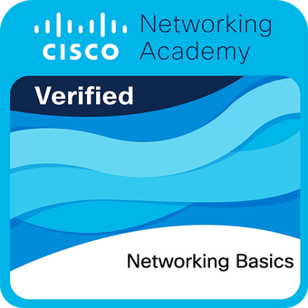

José Polak
Python • Flask • SQL • Backend • Redes • Cibersegurança
São Paulo — Remoto · Híbrido · Presencial
Sobre mim
Estudante de Cibersegurança (trilha Cisco) e entusiasta de Infraestrutura de Redes e Administração de Sistemas Linux.
Foco em protocolos de rede, hardening de sistemas e segurança de ambientes digitais.
Desenvolvo aplicações web com Python/Flask, incluindo integração a bancos de dados.
Formação
Analista de Cibersegurança Jr.
Cisco NetAcad · Em andamentoFundamentos de Redes e Segurança da Informação.
Desenvolvimento Web
Faculdade Anhanguera/Unopar · CST · Pausado (retorno em 2026)Fundamentos de HTML, CSS e JavaScript, organização de arquitetura web e versionamento de código.
Estudos Autônomos
BackendConstrução de aplicações backend com Python/Flask e integração a bancos de dados SQL.
Letras
PUCPRBase em comunicação e produção textual, aplicada hoje à documentação técnica.
Tecnologias & Ferramentas
Redes & Infra
Protocolos
Backend
Frontend
Ambiente
Ferramentas
Cisco NetAcad

Networking Basics Introduction to Cybersecurity
Introduction to Cybersecurity
Meus Projetos
Canivete Multiferramentas
Python, Flask, SQLAlchemy, SQLite
Utilitário web para conversão de moedas em tempo real
com histórico persistente e integração com API financeira.
Obs.: Outras utilidades serão implementadas em breve.
Registro de Despesas
Python, Flask, SQLite
Aplicação web desenvolvida em Flask para registro e visualização de despesas pessoais, com persistência em SQLite e deploy em produção no Render.
Relatório de Vendas
Python, Flask, SQLite
Aplicação backend desenvolvida em Python com Flask e SQLite, incluindo interface web e rota de API para exposição de dados em JSON.
Gerador de Senhas
HTML, CSS, JavaScript, Vercel
Gerador de senhas em JavaScript para praticar lógica e manipulação de DOM. Útil para geração de senhas seguras.